|
|
Home | About | Reviews | Articles | Contact |
| Mallorca (Majorca) is one of Spain's Balearic Islands in the Mediterranean. It's known for beach resorts, sheltered coves, limestone mountains and Roman and Moorish remains. Capital Palma has nightlife, the Moorish Almudaina royal palace and 13th-century Santa María Cathedral. Stone-built villages include Pollença, with its art galleries and music festival, and hillside Fornalutx, surrounded by citrus plantations |
| 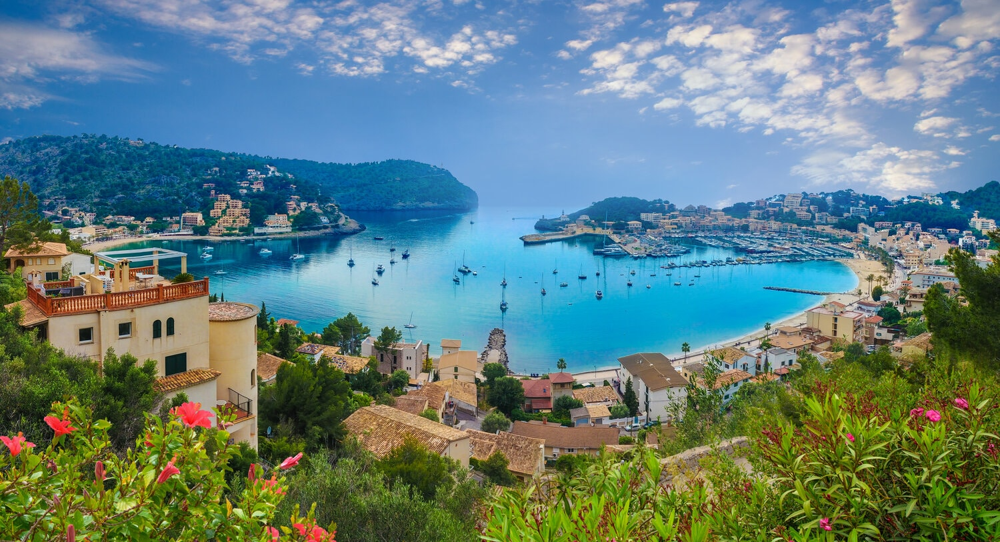 | The capital of the island, Palma, is also the capital of the autonomous community of the Balearic Islands. The Balearic Islands have been an autonomous region of Spain since 1983. There are two small islands off the coast of Mallorca: Cabrera (southeast of Palma) and Dragonera (west of Palma). The anthem of Mallorca is "La Balanguera". Like the other Balearic Islands of Menorca, Ibiza and Formentera, the island is an extremely popular holiday destination, particularly for tourists from Germany and the United Kingdom. The international airport, Palma de Mallorca Airport, is one of the busiest in Spain; it was used by 28 million passengers in 2017, with use increasing every year since 2012. The Cultural Landscape of the Serra de Tramuntana was registered as a UNESCO World Heritage Site in 2011.Archudke Ludwig Salvator of Austria was the architect of tourism in the Balearic Islands. He first arrived on the island in 1867, travelling under his title "Count of Neuendorf". He later settled in Mallorca, buying up wild areas of land in order to preserve and enjoy them. Nowadays, a number of trekking routes are named after him.French writer Amantine Lucile Aurore Dupin (pseudonym: George Sand), at that time in a relationship with Chopin, described her stay in Mallorca in A Winter in Majorca, published in 1855. Other famous writers used Mallorca as the setting for their works. While on the island, the Nicaraguan poet Rubén Darío started writing the novel El oro de Mallorca, and wrote several poems, such as La isla de oro. |
|
Content: Culture & Tradition Best Places To Explore Live .Love .Eat Best Things To Do |

| 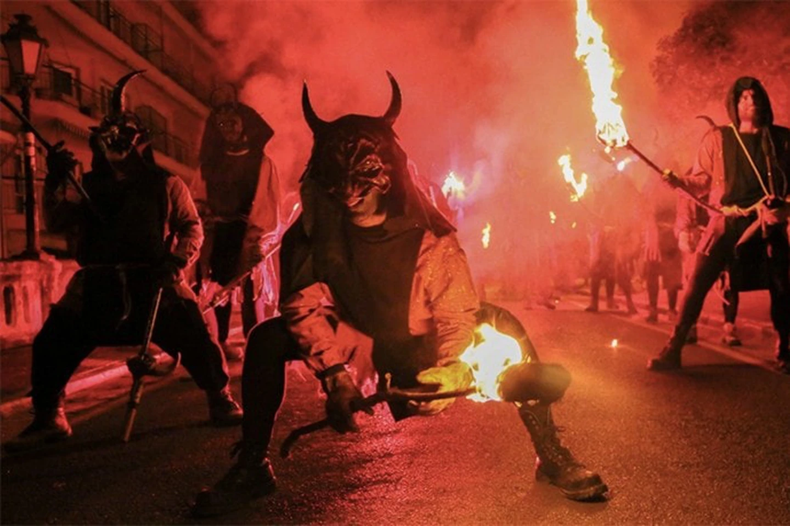 | Fiestas de Sant Sebastia is another good reason to visit Palma de Mallorca during January. Mallorca’s biggest annual festival is a two-week celebration of the city’s patron saint, bringing everyone together for a week of bonfires, shared meals, live performances and traditional dancing.The festival begins with a procession of fire breathers and drummers through Palma’s packed streets, young and old coming together to witness a centuries-old spectacle. Plaça Major town square comes alive with traditional dancing and folk music, while the square surrounding the town hall holds hundreds of bodies swaying to electronic music.Palma’s Passeig de Born is transformed into a rock concert, and crowds gather throughout the cobbled streets around sound systems pumping electro swing. Each neighbourhood has its own bonfires and torada (pork barbecues) on which to cook sobrassada, botifarró and chops.There’s plenty to fill a weekend in Palma before we even get to the city’s up-and-coming Portixol and Molinar neighbourhoods. Something to look forward to on another visit to the Majorcan capital, one of the Mediterranean’s most underrated cities of culture. |

| 1. The Cultured Capital City of Palma de Mallorca | |
| The seaside capital city of Palma de Mallorca dazzles visitors with its alluring Mediterranean setting and abundance of cultural attractions. Two impressive monuments, the cathedral and the castle, give this city the prestige of other capitals in Europe. The glorious Catedral de Mallorca (La Seo) overlooks the Old Harbor and appears from a distance as a beacon of faith. This monumental sandstone building dates to the 13th century but wasn't completed until the 17th century. Visitors are awed by the 6,600-square-meter interior of the cathedral with its aisled nave rising to a height of 44 meters. Splendid stained-glass windows including several rose windows (the largest dates from 1370) illuminate the sanctuary with an ethereal glow. Much of the interior was remodeled by famous Catalan architect Antoni Gaudí in the early 20th century. | 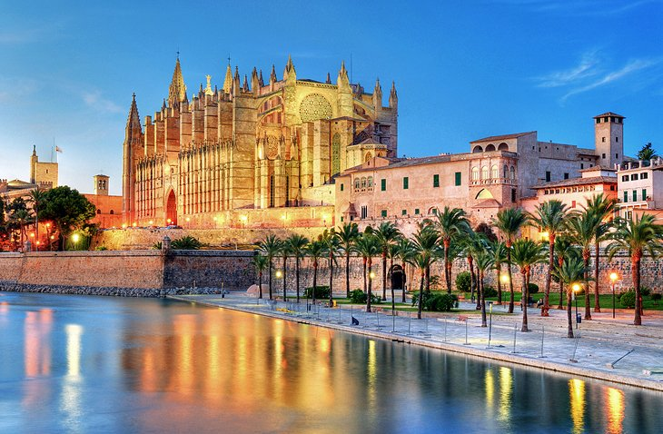 |
| 2. Alcúdia's Old Town | |
| Surrounded by lush greenery and pine forests, Alcúdia is one of the most scenic towns in Mallorca. This wonderfully preserved walled medieval town is also known for its interesting historic monuments, delicious cuisine, and traditional festivals. The town lies a distance from the sea and was fortified to protect against pirates that were a danger during the Middle Ages. Of the ancient ramparts, only the Xara and Palma gates and the Renaissance-era Bastion of Sant Ferran remain. Alcúdia has a distinct Old World ambience with it winding medieval streets and palatial Renaissance houses. Important churches include Santa Ana and Sant Jaume and the Baroque chapel of Sant Crist with a 15th-century image of Christ. Alcúdia also has archaeological sites as the town was built on the site of an ancient Roman settlement. Remains of Roman houses, a forum, and an amphitheater lie to the south of Sant Jaume Church. | 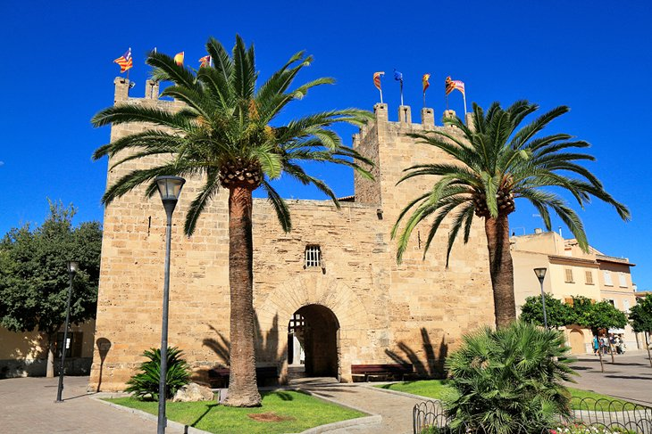 |
| 3. Puerto Portals | |
| This glamorous seaside resort on the Southwest Coast of Majorca is a favorite destination of the Spanish royal family and other trendsetting visitors. Fashionable people flock to the upscale restaurants and designer boutiques lining the waterfront of the yacht-filled marina. Flashy cars (Ferraris and Porsches are common) add to the scene, making Puerto Portals feel like a smaller version of Monte Carlo in Monaco. Gourmet dining is a popular pastime. Many of the cafés and restaurants have outdoor patios to soak up the sunshine and the scenery. Several top choices include the casual Tristán Bistro; the traditional Restaurant Flanigan, which serves Mediterranean cuisine; Ritzi, a happening spot that offers live entertainment; Baiben, a restaurant with a Michelin-starred chef; and the Cappuccino Grand Café, which has fabulous terrace seating beneath shady umbrellas. Nearby, Marineland Mallorca is a favorite attraction for families with kids. | 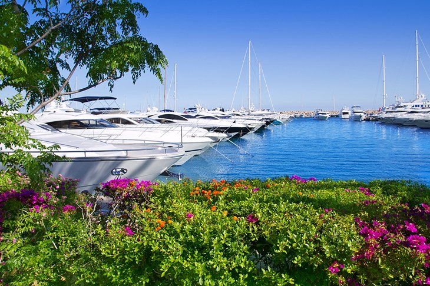 |
| 4. The Hilltop Town and Monastery of Valldemossa | |
| The historic village of Valldemossa brims with old-world charm. Visitors are enchanted by the cluster of cobbled pedestrian streets, narrow alleyways, and old stone buildings. At the center of the town, a pleasant tree-shaded square (the Plaza Ramon Llull) provides an inviting spot for bustling outdoor cafés. Valldemossa is blessed with a spectacular setting between the Tramuntana Mountains and the Mediterranean Sea. The lush terraced hillside surrounding the village leads down to beaches and coves. Below the hilltop town is a lovely harbor, the Port de Valldemossa, which still feels like a little fishing village. Tourists will enjoy sampling the fresh seafood specialties at the local restaurants. | 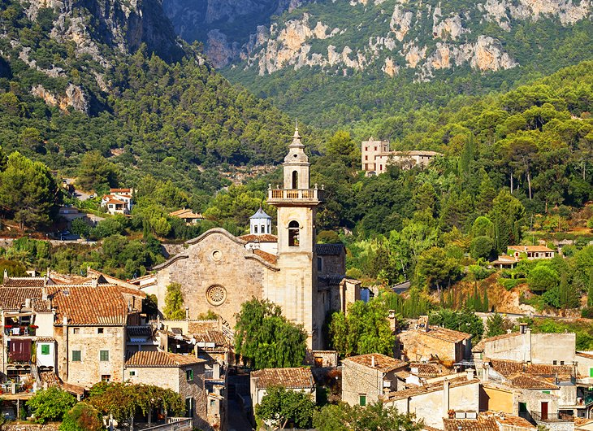 |
| 5. Sóller's Beautiful Seaside Scenery | |
| This lovely little town is tucked away in an idyllic valley, surrounded by a beautiful landscape of olive groves and citrus orchards that leads to the sea. Traveling here from Palma de Mallorca, visitors can take the famous Sóller Train (El Tren de Sóller) on a dramatic scenic ride through the Sierra de Alfàbia mountains. The Palma-Sóller railway dates back to 1912. There is also an electric tram that runs from the Port de Sóller to the town of Sóller The town has several important historic monuments including the 14th-century parish Església de Sant Bartomeu, a monument dedicated to the Sacred Heart of Jesus, and Sa Capelleta Monastery off Lluc road. About six kilometers outside the town is the UNESCO-listed Jardines de Alfabia, the site of a Moorish Vizier's residence dating back to the 12th century. Mediterranean vegetation and tropical palm trees flourish in these delightful gardens. Other features include a fragrant lemon and orange orchard and leafy English-style landscaping. | 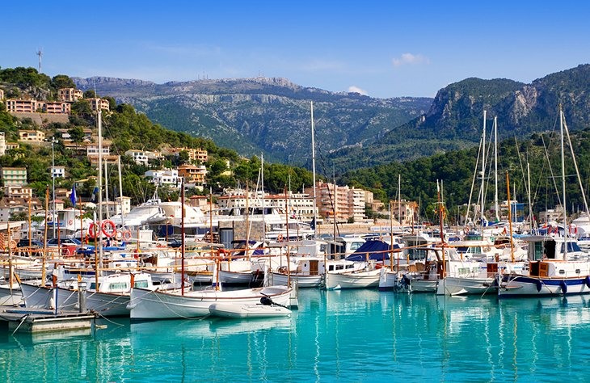 |

| 1. Tumbet | |
| Tumbet (or ‘tombet’) is Mediterranean through and through. Combining fried aubergines, potatoes, red peppers, tomatoes, olive oil and garlic, it can be compared to ratatouille from Provence and samfaina from Cataluña and Valencia. A recipe that goes as far back as the 16th century, tumbet first appeared after potatoes and tomatoes were introduced to Europe. Wonderful eaten with a hunk of local bread, it also pairs very well with meat or fish. It’s a top choice for vegetarians when enjoyed on its own. | 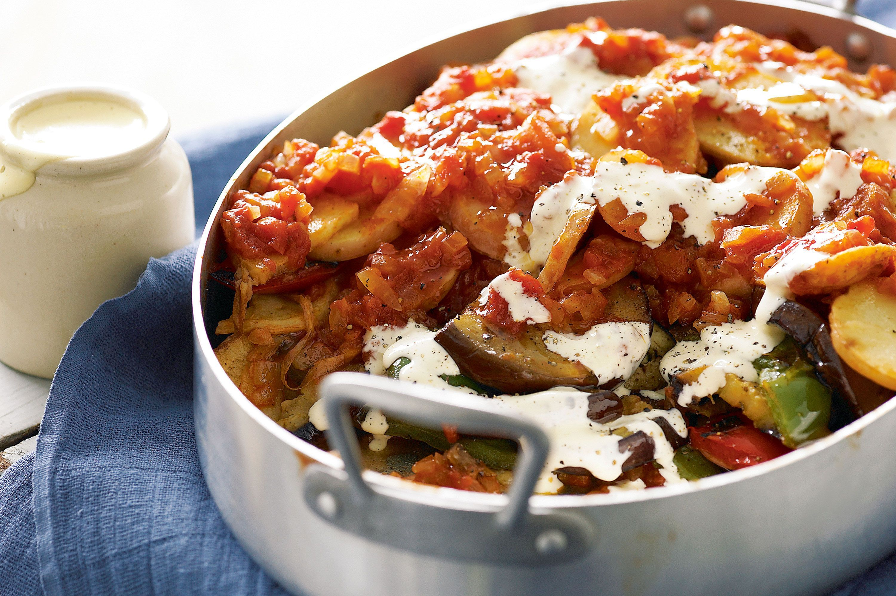 |
| 2. Sobrassada | |
| I first encountered sobrassada as a pizza topping in a trendy new pizza parlour in London a few years back and fell for it pretty hard. I only discovered this spreadable cured sausage was in fact native to Mallorca when I did some research for this trip. Components are pork mince, bacon, salt and spices and it has a similar colour to Spanish chorizo thanks to paprika. It’s a little addictive. You’ll often see it smashed onto rustic bread and as a type of tapa, sobrassada pairs exceedingly well with a slice of local cheese and a drizzle of honey. | 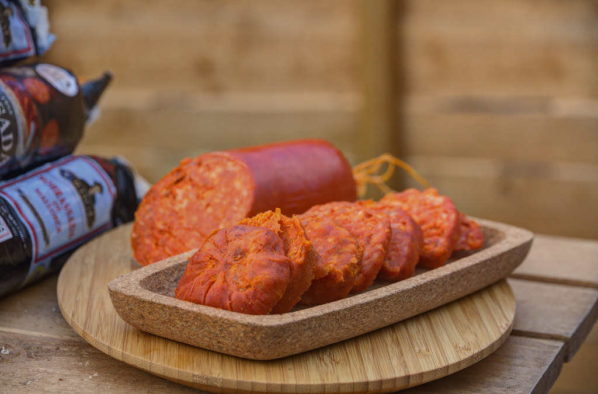 |
| 3. Coca Mallorquina | |
| I’ll refrain from calling this what it may well look like: a Spanish pizza. I suspect it might be as annoying for the Spanish to hear that as it is for me when people refer to lahmacun as ‘Turkish pizza’. These are of course local dishes in their own right. The coca is a very simple but glorious Mallorca food. Flatbread dough is topped with vegetables and baked, a popular version being coca de trempó. You can find out more about trempó below here. Generally enjoyed as a snack, individual portions of coca will be on sale in ‘panaderias’ (bakeries) all over the island. They make seriously great use of the season’s vegetables. | 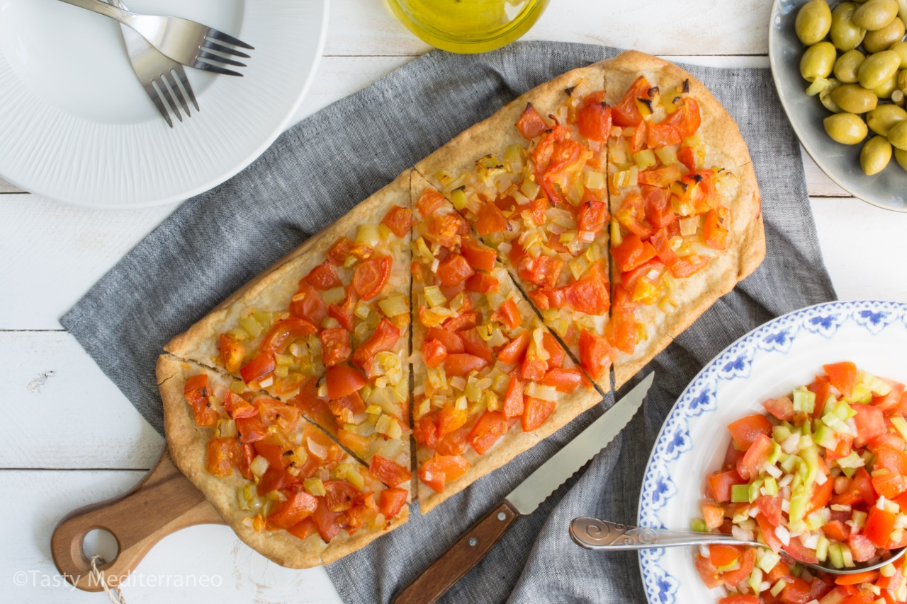 |
| 4. Ensaïmada | |
| This is easily the most famous pastry from Mallorca. And it’s probably my favourite thing I ate on this trip. Ensaimada is a spiral pastry made with flour eggs, water, sugar and a mother dough. All sweet pastry basics so far. But what makes it unusual and oh so excellent is that the fat used is ‘saim’ (pork lard), rather than butter. Ideal for anyone who is lacto-intolerant! But tough luck for the vegetarians. Savour a slice over breakfast with a coffee or as a ‘merienda’ (afternoon snack). You can find variations on the basic recipe, with some filled with cream, chocolate or sweet pumpkin. | 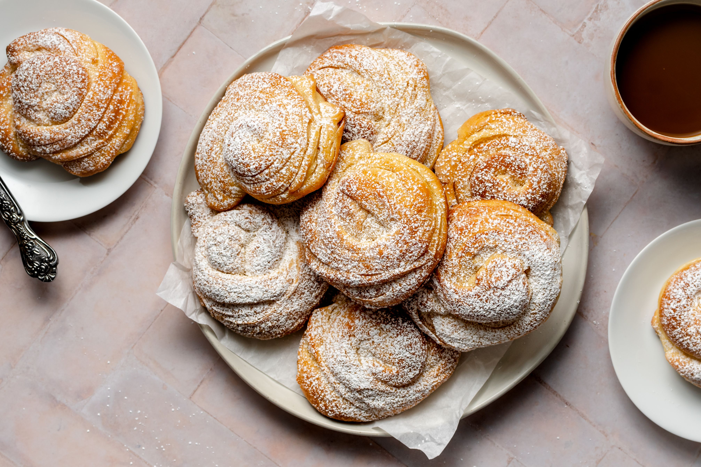 |
| 5. Tapas | |
| Think of Spanish food and tapas is often the first thing that comes to mind. Tapas comes from the word ‘tapar’, the Spanish verb meaning ‘to cover’. In medieval times, tavern drinkers would rest (and eat) a simple slice of bread with ham on the rim of their glass. It would act as a cover to protect their tipple from flies. And the rest as they say, is history. Tapas is a quintessential part of Spanish food and it can be found all over the country, including Mallorca. A great spot to sample local tapas in Palma is at Mercat 1930, a tight knot of covered food and drink stalls. | 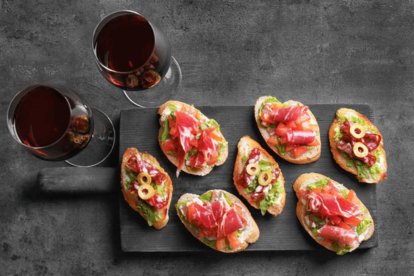 |

| 1. Get lost in the narrow streets of Palma | |
| You’ll likely fly into Palma de Mallorca – and you’ll want to spend at least a couple of days here. The historic old town is an enchanting rabbit warren of cobbled streets, lined with shops (ah, the shoe stores!), cafés and bistros. Take in the honey-colored buildings, flaunting beautiful casement windows and Juliet balconies. Soak up the atmosphere as you wander the medieval streets.And you can always ask a store owner or other local for help to orient yourself if you’re hopelessly confused. | 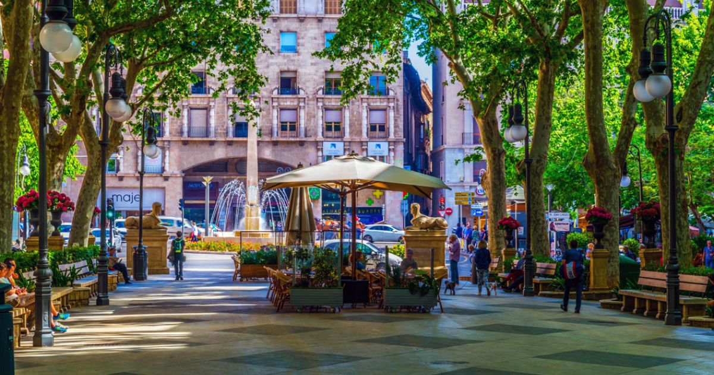 |
| 2. Admire the Royal Palace of La Almudaina | |
| While sightseeing in Palma de Mallorca, the Royal Palace of La Almudaina is very much worth visiting too. It’s opposite the cathedral, so it’s easy to do. While the site dates back to Roman days, the current palace was rebuilt in the 14th century. (Almudaina means “fortress” or “citadel” in Arabic.) The Spanish royal family still celebrates official functions in the palace when they visit. While sightseeing in Palma de Mallorca, the Royal Palace of La Almudaina is very much worth visiting too. It’s opposite the cathedral, so it’s easy to do. While the site dates back to Roman days, the current palace was rebuilt in the 14th century. (Almudaina means “fortress” or “citadel” in Arabic.) | 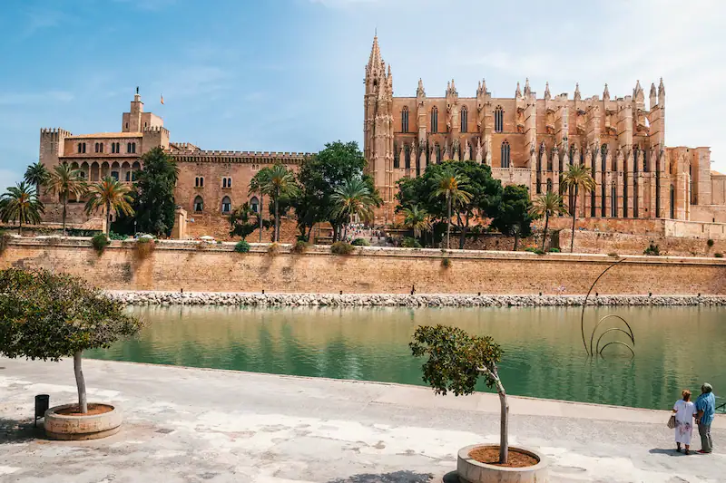 |
| 3. Shop at the Mercat de Santa Catalina | |
| Established in 1920, the Mercat de Santa Catalina (Santa Catalina Market) is Palma’s oldest food market. Dozens of artisan food producers sell fruit, veggies, meat, cheese, seafood, flowers and pastries. Staying on a super yacht? (Why not!) The market is the perfect place for your chef to stock up on fresh produce and other great food supplies. Or just browse, and maybe sit down at a little café in the market for a tapa with a glass of wine. | 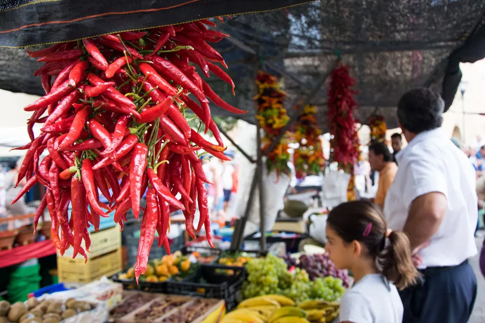 |
| 4. Take the train to Soller | |
| From the capital of Palma de Mallorca, there’s a wonderful narrow-gauge train that goes to the town of Soller. The train has been trundling through the craggy Serra de Tramuntana mountain range since 1912, bringing in both day-trippers and visitors (like us, who stayed a while in Soller). The vintage wooden carriages are a trip back in time, with brass ceiling lamps, burnished wood paneling and wood benches.The Soller train trip takes about an hour – squeezing through 13 tunnels. The time passes all too quickly because the scenery is just so darn scenic! | 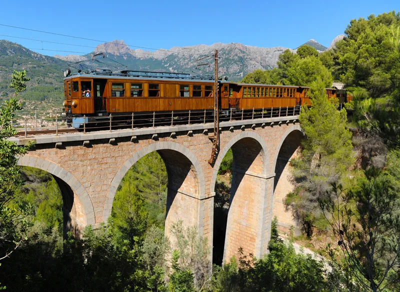 |
| 5.Swim at Cala Deia | |
| There’s a donkey track that winds through the forest of pine trees beyond Deia. Follow that, and you come to one of the best beaches in Mallorca – Cala Deia (our favorite beach). This hidden pebble cove at the bottom of the village is where you can swim in limpid crystal clear water and eat fresh fish at a simple seafront restaurant. Of course, retracing your steps is another matter. Our thighs burned big time on the hike back up the 1,000 vertical feet to Deia. But such are the delights – and challenges – of the sun-splashed Spanish island of Mallorca. | 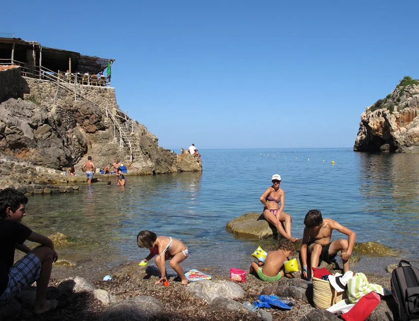 |